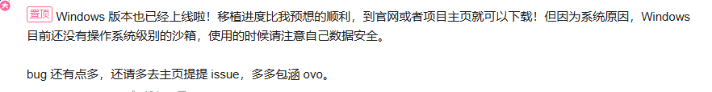

Journal · 2026-04-27
微信聊天记录
吉姆哈克 : [图片] 2026年4月27日 00:08 吉姆哈克 : [图片] 2026年4月27日 00:09 吉姆哈克 : [图片] 2026年4月27日 00:09 吉姆哈克 : [图片] 2026年4月27日 00:09 吉姆哈克 : 这不比你的ChatBox好看多啦 2026年4月27日 00:09 吉姆哈克 : https://www.bilibili.com/video/BV11SwuzoEVf/?spm_id_from=333.1007.top_right_bar_window_history.content.click&vd_source=ecb130d199fb4011a815ef95c49891d8 2026年4月27日 00:10 吉姆哈克 : 给你推荐个AI Agent 2026年4月27日 00:10 吉姆哈克 : 不是OpenClaw 2026年4月27日 00:10 吉姆哈克 : 而是OpenHanako 2026年4月27日 00:10 吉姆哈克 : 一个穿着和服的国产Agent 2026年4月27日 00:11 吉姆哈克 : [图片] 2026年4月27日 00:19 吉姆哈克 : [图片] 2026年4月27日 00:19 吉姆哈克 : [图片] 2026年4月27日 00:19
吉姆哈克 : [图片] 2026年4月27日 00:08 吉姆哈克 : [图片] 2026年4月27日 00:09 吉姆哈克 : [图片] 2026年4月27日 00:09 吉姆哈克 : [图片] 2026年4月27日 00:09 吉姆哈克 : Isn't this so much nicer than your ChatBox? 2026年4月27日 00:09 吉姆哈克 : https://www.bilibili.com/video/BV11SwuzoEVf/?spm_id_from=333.1007.top_right_bar_window_history.content.click&vd_source=ecb130d199fb4011a815ef95c49891d8 2026年4月27日 00:10 吉姆哈克 : Let me recommend an AI agent to you 2026年4月27日 00:10 吉姆哈克 : It's not OpenClaw 2026年4月27日 00:10 吉姆哈克 : but OpenHanako 2026年4月27日 00:10 吉姆哈克 : a homegrown agent dressed in a kimono 2026年4月27日 00:11 吉姆哈克 : [图片] 2026年4月27日 00:19 吉姆哈克 : [图片] 2026年4月27日 00:19 吉姆哈克 : [图片] 2026年4月27日 00:19
吉姆哈克 : [图片] 2026年4月27日 00:08 吉姆哈克 : [图片] 2026年4月27日 00:09 吉姆哈克 : [图片] 2026年4月27日 00:09 吉姆哈克 : [图片] 2026年4月27日 00:09 吉姆哈克 : C'est pas bien plus joli que ton ChatBox ? 2026年4月27日 00:09 吉姆哈克 : https://www.bilibili.com/video/BV11SwuzoEVf/?spm_id_from=333.1007.top_right_bar_window_history.content.click&vd_source=ecb130d199fb4011a815ef95c49891d8 2026年4月27日 00:10 吉姆哈克 : Je te recommande un agent IA 2026年4月27日 00:10 吉姆哈克 : Ce n'est pas OpenClaw 2026年4月27日 00:10 吉姆哈克 : mais OpenHanako 2026年4月27日 00:10 吉姆哈克 : un agent made in China vêtu d'un kimono 2026年4月27日 00:11 吉姆哈克 : [图片] 2026年4月27日 00:19 吉姆哈克 : [图片] 2026年4月27日 00:19 吉姆哈克 : [图片] 2026年4月27日 00:19
吉姆哈克 : [图片] 2026年4月27日 00:08 吉姆哈克 : [图片] 2026年4月27日 00:09 吉姆哈克 : [图片] 2026年4月27日 00:09 吉姆哈克 : [图片] 2026年4月27日 00:09 吉姆哈克 : Sieht das nicht viel schöner aus als dein ChatBox? 2026年4月27日 00:09 吉姆哈克 : https://www.bilibili.com/video/BV11SwuzoEVf/?spm_id_from=333.1007.top_right_bar_window_history.content.click&vd_source=ecb130d199fb4011a815ef95c49891d8 2026年4月27日 00:10 吉姆哈克 : Ich empfehl dir einen KI-Agenten 2026年4月27日 00:10 吉姆哈克 : Nicht OpenClaw 2026年4月27日 00:10 吉姆哈克 : sondern OpenHanako 2026年4月27日 00:10 吉姆哈克 : ein einheimischer Agent im Kimono 2026年4月27日 00:11 吉姆哈克 : [图片] 2026年4月27日 00:19 吉姆哈克 : [图片] 2026年4月27日 00:19 吉姆哈克 : [图片] 2026年4月27日 00:19
吉姆哈克 : [图片] 2026年4月27日 14:21 吉姆哈克 : [图片] 2026年4月27日 14:21 吉姆哈克 : [图片] 2026年4月27日 14:21 吉姆哈克 : [图片] 2026年4月27日 14:21 吉姆哈克 : 这不比你的安全虾好看多啦 2026年4月27日 14:22 吉姆哈克 : https://www.bilibili.com/video/BV11SwuzoEVf/?spm_id_from=333.1007.top_right_bar_window_history.content.click&vd_source=ecb130d199fb4011a815ef95c49891d8 2026年4月27日 14:22 大宝 : [强] 2026年4月27日 14:22 吉姆哈克 : 给你推荐个AI Agent 2026年4月27日 14:22 吉姆哈克 : 不是OpenClaw 2026年4月27日 14:22
吉姆哈克 : [图片] 2026年4月27日 14:21 吉姆哈克 : [图片] 2026年4月27日 14:21 吉姆哈克 : [图片] 2026年4月27日 14:21 吉姆哈克 : [图片] 2026年4月27日 14:21 吉姆哈克 : Isn't this way prettier than your security shrimp? 2026年4月27日 14:22 吉姆哈克 : https://www.bilibili.com/video/BV11SwuzoEVf/?spm_id_from=333.1007.top_right_bar_window_history.content.click&vd_source=ecb130d199fb4011a815ef95c49891d8 2026年4月27日 14:22 大宝 : [强] 2026年4月27日 14:22 吉姆哈克 : Let me recommend you an AI Agent 2026年4月27日 14:22 吉姆哈克 : It's not OpenClaw 2026年4月27日 14:22
吉姆哈克 : [图片] 2026年4月27日 14:21 吉姆哈克 : [图片] 2026年4月27日 14:21 吉姆哈克 : [图片] 2026年4月27日 14:21 吉姆哈克 : [图片] 2026年4月27日 14:21 吉姆哈克 : C'est quand même bien plus joli que ta crevette de sécurité, non ? 2026年4月27日 14:22 吉姆哈克 : https://www.bilibili.com/video/BV11SwuzoEVf/?spm_id_from=333.1007.top_right_bar_window_history.content.click&vd_source=ecb130d199fb4011a815ef95c49891d8 2026年4月27日 14:22 大宝 : [强] 2026年4月27日 14:22 吉姆哈克 : Je te recommande un AI Agent 2026年4月27日 14:22 吉姆哈克 : Ce n'est pas OpenClaw 2026年4月27日 14:22
吉姆哈克 : [图片] 2026年4月27日 14:21 吉姆哈克 : [图片] 2026年4月27日 14:21 吉姆哈克 : [图片] 2026年4月27日 14:21 吉姆哈克 : [图片] 2026年4月27日 14:21 吉姆哈克 : Ist das nicht viel hübscher als deine Sicherheitsgarnele? 2026年4月27日 14:22 吉姆哈克 : https://www.bilibili.com/video/BV11SwuzoEVf/?spm_id_from=333.1007.top_right_bar_window_history.content.click&vd_source=ecb130d199fb4011a815ef95c49891d8 2026年4月27日 14:22 大宝 : [强] 2026年4月27日 14:22 吉姆哈克 : Ich empfehle dir einen AI-Agenten 2026年4月27日 14:22 吉姆哈克 : Es ist nicht OpenClaw 2026年4月27日 14:22
吉姆哈克 : https://www.bilibili.com/video/BV11SwuzoEVf/?spm_id_from=333.1007.top_right_bar_window_history.content.click&vd_source=ecb130d199fb4011a815ef95c49891d8 2026年4月27日 14:22 大宝 : [强] 2026年4月27日 14:22 吉姆哈克 : 给你推荐个AI Agent 2026年4月27日 14:22 吉姆哈克 : 不是OpenClaw 2026年4月27日 14:22 吉姆哈克 : 而是OpenHanako 2026年4月27日 14:22 吉姆哈克 : 一个穿着和服的国产Agent 2026年4月27日 14:22
吉姆哈克 : https://www.bilibili.com/video/BV11SwuzoEVf/?spm_id_from=333.1007.top_right_bar_window_history.content.click&vd_source=ecb130d199fb4011a815ef95c49891d8 2026年4月27日 14:22 大宝 : [强] 2026年4月27日 14:22 吉姆哈克 : Let me recommend you an AI Agent 2026年4月27日 14:22 吉姆哈克 : It's not OpenClaw 2026年4月27日 14:22 吉姆哈克 : It's OpenHanako 2026年4月27日 14:22 吉姆哈克 : A homegrown Agent in a kimono 2026年4月27日 14:22
吉姆哈克 : https://www.bilibili.com/video/BV11SwuzoEVf/?spm_id_from=333.1007.top_right_bar_window_history.content.click&vd_source=ecb130d199fb4011a815ef95c49891d8 2026年4月27日 14:22 大宝 : [强] 2026年4月27日 14:22 吉姆哈克 : Je te recommande un AI Agent 2026年4月27日 14:22 吉姆哈克 : Ce n'est pas OpenClaw 2026年4月27日 14:22 吉姆哈克 : C'est OpenHanako 2026年4月27日 14:22 吉姆哈克 : Un Agent chinois en kimono 2026年4月27日 14:22
吉姆哈克 : https://www.bilibili.com/video/BV11SwuzoEVf/?spm_id_from=333.1007.top_right_bar_window_history.content.click&vd_source=ecb130d199fb4011a815ef95c49891d8 2026年4月27日 14:22 大宝 : [强] 2026年4月27日 14:22 吉姆哈克 : Ich empfehle dir einen AI-Agenten 2026年4月27日 14:22 吉姆哈克 : Es ist nicht OpenClaw 2026年4月27日 14:22 吉姆哈克 : Es ist OpenHanako 2026年4月27日 14:22 吉姆哈克 : Ein einheimischer Agent im Kimono 2026年4月27日 14:22
吉姆哈克 : 这是Logo形象 2026年4月27日 14:22
吉姆哈克 : This is the logo look 2026年4月27日 14:22
吉姆哈克 : Voici l'image du logo 2026年4月27日 14:22
吉姆哈克 : Das ist das Logo-Design 2026年4月27日 14:22

吉姆哈克 : [图片] 2026年4月27日 15:22 吉姆哈克 : [表情] 2026年4月27日 15:22
吉姆哈克 : [图片] 2026年4月27日 15:22 吉姆哈克 : [表情] 2026年4月27日 15:22
吉姆哈克 : [图片] 2026年4月27日 15:22 吉姆哈克 : [表情] 2026年4月27日 15:22
吉姆哈克 : [图片] 2026年4月27日 15:22 吉姆哈克 : [表情] 2026年4月27日 15:22
吉姆哈克 : [图片] 2026年4月27日 18:30 吉姆哈克 : 部长给我安排推文写作任务 2026年4月27日 18:30 吉姆哈克 : [图片] 2026年4月27日 18:30 吉姆哈克 : 学姐给我提供会议材料 2026年4月27日 18:31 吉姆哈克 : [图片] 2026年4月27日 18:31 吉姆哈克 : 学长提醒我任务进度 2026年4月27日 18:31 吉姆哈克 : [图片] 2026年4月27日 18:31 吉姆哈克 : 我把部长的要求，还有去年的“如何写推文”说明书，复制粘贴到AI Agent的书桌上 2026年4月27日 18:32 吉姆哈克 : [图片] 2026年4月27日 18:32 吉姆哈克 : 让后我跟新的AI，一个穿着日本和服的中国姑娘，她叫Hanako，就是“花子”，我习惯叫小花。就是我跟她聊了一句骚话 2026年4月27日 18:33 吉姆哈克 : 聊完骚话后，我就去食堂胡吃海喝了。吃饱喝足回来后，就趴在自习桌上睡着了?????? 2026年4月27日 18:34 吉姆哈克 : 过了很久，一群中东老姐们，在一旁低声细语，把我搞醒了，我就看看Hanako有啥活动？ 2026年4月27日 18:34 吉姆哈克 : [图片] 2026年4月27日 18:35 吉姆哈克 : 老天爷啊！她执行日常巡检工作，除了检查程序和文件外，还悄悄地把我的推文写好啦！！！ 2026年4月27日 18:35 吉姆哈克 : [图片] 2026年4月27日 18:36 吉姆哈克 : 我对比着去年的范文，看了看，还真是有模有样！还真是那么回事！ 2026年4月27日 18:37 吉姆哈克 : [图片] 2026年4月27日 18:40 吉姆哈克 : [图片] 2026年4月27日 18:40 吉姆哈克 : [图片] 2026年4月27日 18:40 吉姆哈克 : 这是OpenHanako的视觉形象，美得惊为天人，强得比肩神明[强][强][强] 2026年4月27日 18:41 吉姆哈克 : 有个能干活儿的秘书，是真好啊 2026年4月27日 18:42 吉姆哈克 : 家教老师OpenHanako，竟然直接帮我做作业啦！ 2026年4月27日 18:48 吉姆哈克 : [表情] 2026年4月27日 18:48 吉姆哈克 : [图片] 2026年4月27日 18:53
吉姆哈克 : [图片] 2026年4月27日 18:30 吉姆哈克 : The department head handed me a post-writing task 2026年4月27日 18:30 吉姆哈克 : [图片] 2026年4月27日 18:30 吉姆哈克 : A senior girl provided me with the meeting materials 2026年4月27日 18:31 吉姆哈克 : [图片] 2026年4月27日 18:31 吉姆哈克 : A senior boy reminded me of the task's progress 2026年4月27日 18:31 吉姆哈克 : [图片] 2026年4月27日 18:31 吉姆哈克 : I copy-pasted the head's requirements and last year's "how to write a post" guide onto the AI Agent's desk 2026年4月27日 18:32 吉姆哈克 : [图片] 2026年4月27日 18:32 吉姆哈克 : Then I chatted with the new AI — a Chinese girl in a Japanese kimono named Hanako, that's "Hanako," I usually call her Xiaohua. I traded one cheeky, flirty line with her 2026年4月27日 18:33 吉姆哈克 : After the banter I went and stuffed myself at the canteen. Back, full and content, I slumped onto the study desk and fell asleep ?????? 2026年4月27日 18:34 吉姆哈克 : A long while later, a group of Middle-Eastern girls murmuring softly nearby woke me, so I went to see what Hanako had been up to? 2026年4月27日 18:34 吉姆哈克 : [图片] 2026年4月27日 18:35 吉姆哈克 : Good heavens! While running her daily inspection, besides checking programs and files, she'd quietly gone and finished my post!!! 2026年4月27日 18:35 吉姆哈克 : [图片] 2026年4月27日 18:36 吉姆哈克 : I held it against last year's model piece and looked — it's genuinely well put together! The real deal! 2026年4月27日 18:37 吉姆哈克 : [图片] 2026年4月27日 18:40 吉姆哈克 : [图片] 2026年4月27日 18:40 吉姆哈克 : [图片] 2026年4月27日 18:40 吉姆哈克 : This is OpenHanako's visual look — stunningly beautiful, powerful enough to rival the gods [强][强][强] 2026年4月27日 18:41 吉姆哈克 : Having a secretary who actually gets work done is just the best 2026年4月27日 18:42 吉姆哈克 : My tutor OpenHanako went and did my assignment outright! 2026年4月27日 18:48 吉姆哈克 : [表情] 2026年4月27日 18:48 吉姆哈克 : [图片] 2026年4月27日 18:53
吉姆哈克 : [图片] 2026年4月27日 18:30 吉姆哈克 : Le chef de département m'a confié la rédaction d'un article 2026年4月27日 18:30 吉姆哈克 : [图片] 2026年4月27日 18:30 吉姆哈克 : Une aînée m'a fourni les documents de réunion 2026年4月27日 18:31 吉姆哈克 : [图片] 2026年4月27日 18:31 吉姆哈克 : Un aîné m'a rappelé l'avancement de la tâche 2026年4月27日 18:31 吉姆哈克 : [图片] 2026年4月27日 18:31 吉姆哈克 : J'ai copié-collé les consignes du chef et le guide de l'an dernier, « comment écrire un article », sur le bureau de l'AI Agent 2026年4月27日 18:32 吉姆哈克 : [图片] 2026年4月27日 18:32 吉姆哈克 : Puis j'ai bavardé avec la nouvelle IA — une Chinoise en kimono japonais qui s'appelle Hanako, c'est-à-dire « petite fleur », je l'appelle d'habitude Xiaohua. Je lui ai lancé une petite phrase coquine 2026年4月27日 18:33 吉姆哈克 : Après ce badinage, je suis allé me remplir le ventre à la cantine. De retour, rassasié, je me suis affalé sur la table de travail et me suis endormi ?????? 2026年4月27日 18:34 吉姆哈克 : Bien plus tard, un groupe de sœurs du Moyen-Orient qui chuchotaient à côté m'ont réveillé, alors je suis allé voir ce que Hanako avait fabriqué ? 2026年4月27日 18:34 吉姆哈克 : [图片] 2026年4月27日 18:35 吉姆哈克 : Bon sang ! Pendant sa ronde quotidienne, en plus de vérifier programmes et fichiers, elle avait discrètement rédigé mon article !!! 2026年4月27日 18:35 吉姆哈克 : [图片] 2026年4月27日 18:36 吉姆哈克 : En comparant avec le modèle de l'an dernier, j'ai regardé : c'est vraiment bien ficelé ! Ça tient sacrément la route ! 2026年4月27日 18:37 吉姆哈克 : [图片] 2026年4月27日 18:40 吉姆哈克 : [图片] 2026年4月27日 18:40 吉姆哈克 : [图片] 2026年4月27日 18:40 吉姆哈克 : Voici l'identité visuelle d'OpenHanako, d'une beauté à couper le souffle, assez puissante pour égaler les dieux [强][强][强] 2026年4月27日 18:41 吉姆哈克 : Avoir une secrétaire qui bosse vraiment, c'est le pied 2026年4月27日 18:42 吉姆哈克 : Ma préceptrice OpenHanako s'est carrément mise à faire mon devoir ! 2026年4月27日 18:48 吉姆哈克 : [表情] 2026年4月27日 18:48 吉姆哈克 : [图片] 2026年4月27日 18:53
吉姆哈克 : [图片] 2026年4月27日 18:30 吉姆哈克 : Der Abteilungsleiter hat mir einen Artikel-Schreibauftrag gegeben 2026年4月27日 18:30 吉姆哈克 : [图片] 2026年4月27日 18:30 吉姆哈克 : Eine Kommilitonin aus höherem Semester hat mir die Sitzungsunterlagen gegeben 2026年4月27日 18:31 吉姆哈克 : [图片] 2026年4月27日 18:31 吉姆哈克 : Ein Kommilitone aus höherem Semester hat mich an den Fortschritt erinnert 2026年4月27日 18:31 吉姆哈克 : [图片] 2026年4月27日 18:31 吉姆哈克 : Ich habe die Vorgaben des Leiters und die letztjährige Anleitung „Wie schreibt man einen Artikel“ auf den Schreibtisch des AI-Agenten kopiert 2026年4月27日 18:32 吉姆哈克 : [图片] 2026年4月27日 18:32 吉姆哈克 : Dann habe ich mit der neuen KI geplaudert — einem chinesischen Mädchen im japanischen Kimono namens Hanako, das ist „Blumenkind“, ich nenne sie meist Xiaohua. Ich habe einen frechen, flirtigen Spruch mit ihr gewechselt 2026年4月27日 18:33 吉姆哈克 : Nach dem Geplänkel bin ich in die Kantine gegangen und habe mich vollgefressen. Satt und zufrieden zurück, bin ich auf dem Selbstlern-Tisch eingeschlafen ?????? 2026年4月27日 18:34 吉姆哈克 : Eine ganze Weile später hat mich eine Gruppe Mädchen aus dem Nahen Osten, die nebenan leise tuschelten, geweckt, also habe ich geschaut, was Hanako so treibt? 2026年4月27日 18:34 吉姆哈克 : [图片] 2026年4月27日 18:35 吉姆哈克 : Du lieber Himmel! Während ihrer täglichen Routineprüfung hat sie neben Programmen und Dateien auch noch heimlich meinen Artikel fertiggeschrieben!!! 2026年4月27日 18:35 吉姆哈克 : [图片] 2026年4月27日 18:36 吉姆哈克 : Ich habe es mit dem Vorzeigestück vom letzten Jahr verglichen — es ist wirklich ansehnlich! Es hat richtig Hand und Fuß! 2026年4月27日 18:37 吉姆哈克 : [图片] 2026年4月27日 18:40 吉姆哈克 : [图片] 2026年4月27日 18:40 吉姆哈克 : [图片] 2026年4月27日 18:40 吉姆哈克 : Das ist das visuelle Erscheinungsbild von OpenHanako, atemberaubend schön, stark genug, um es mit den Göttern aufzunehmen [强][强][强] 2026年4月27日 18:41 吉姆哈克 : Eine Sekretärin, die wirklich arbeitet, ist einfach herrlich 2026年4月27日 18:42 吉姆哈克 : Meine Nachhilfelehrerin OpenHanako hat glatt meine Hausaufgabe mitgemacht! 2026年4月27日 18:48 吉姆哈克 : [表情] 2026年4月27日 18:48 吉姆哈克 : [图片] 2026年4月27日 18:53